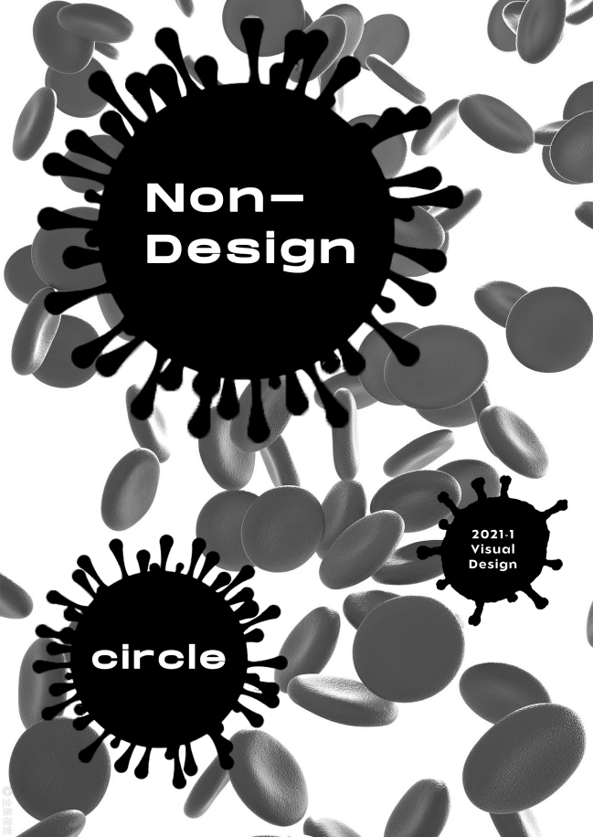
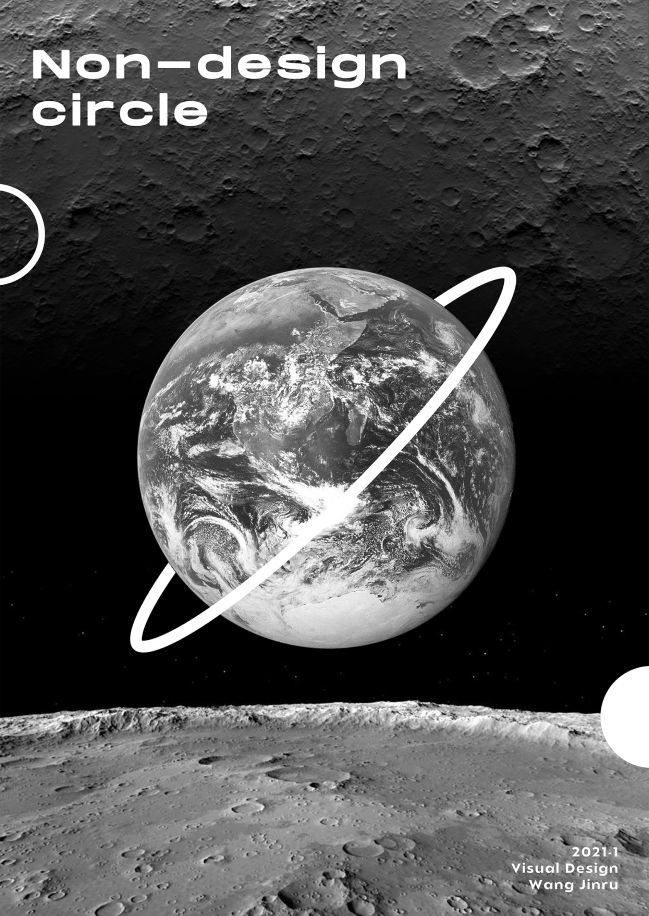
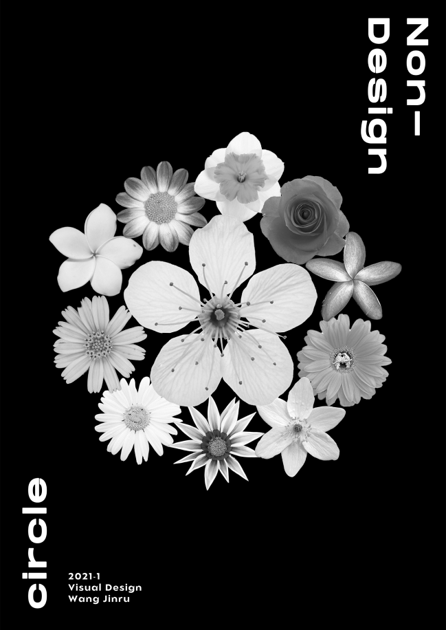
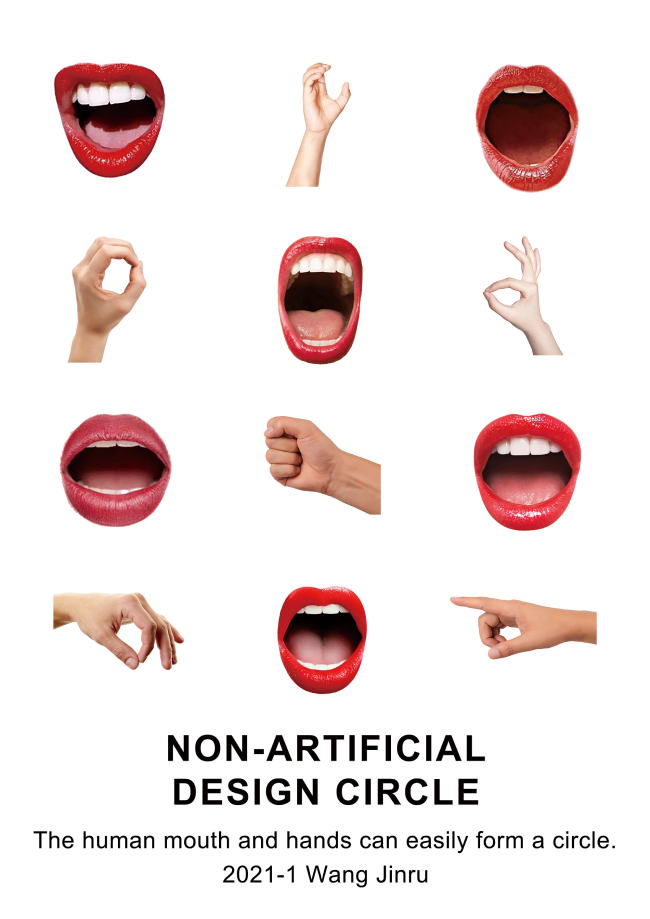
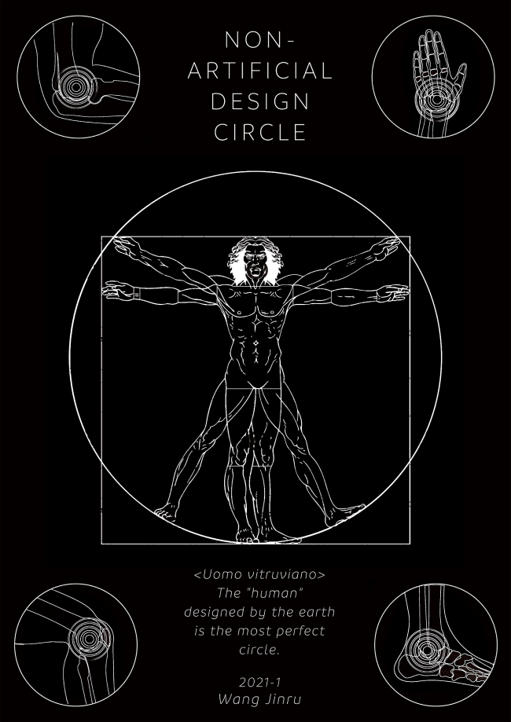
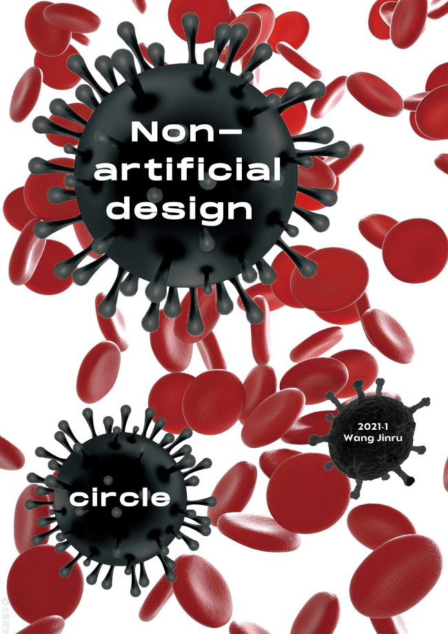
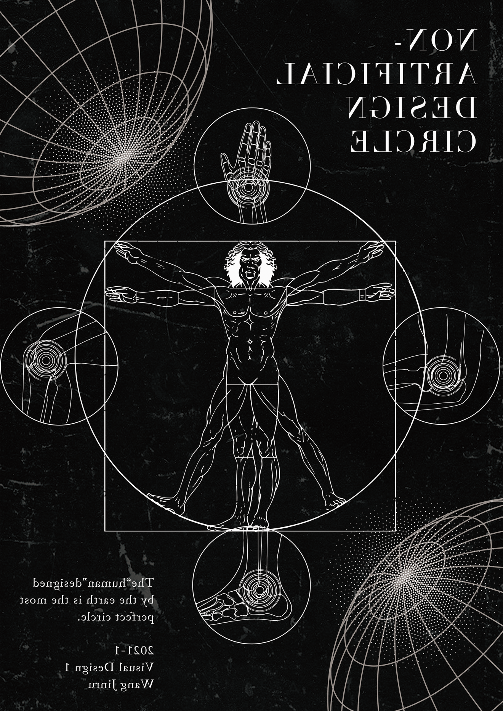

Project
Contact
galaxyfanfan-wjr@naver.com
Designer
Shape Research
왕근여
NON-DESIGN CIRCLE
Category
Shape Poster1 / Shape Poster2 / Shape Poster3
디자인은 우리의 생활을 바꿨다. 그래서 내가 '인위적으로 디자인된 원이 아니다'라는 주제로
우주, 자연, 인체 세 가지 방향으로 리서치를 진행했다.
인간이 디자인한 것이 아니지만 디자인이라고
볼 수도 있다.
바로 이 세상이 디자인한 것이다. 우리 인류 자체도 지구가 디자인한 결과물이다.
우주·자연·인체
인체
NON-DESIGN CIRCLE
Poster
Poster
Poster






